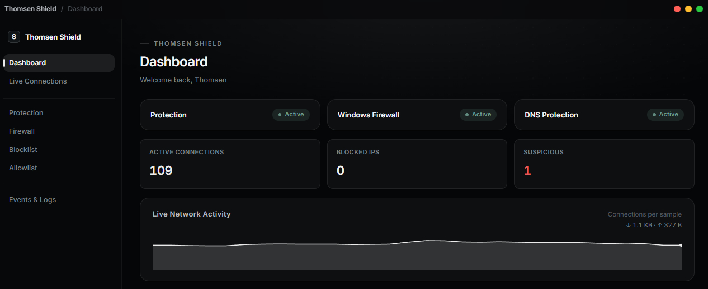

Dashboard
Protection and firewall status, active connection count, blocked IPs, and a small live activity graph — the whole picture in one deliberately minimal screen, updated in real time.

Thomsen Shield
Watches every connection your PC makes, flags abuse the moment it happens, and gives you full control over Windows Firewall — without replacing it or hiding what it's doing.
Features
A full set of network and firewall tools in one deliberately minimal interface.
Protection and firewall status, active connection count, blocked IPs, and a small live activity graph — the whole picture in one deliberately minimal screen, updated in real time.

Every active TCP/UDP connection with the owning app, remote address, and status. Block, allow, or copy an IP straight from its details.
Automatic detection of connection spikes and repeated connections from one IP, with a Low / Normal / High sensitivity control. Lockdown Mode temporarily raises sensitivity to High and blocks flagged connections automatically until you turn it off.
View, create, enable, disable, and remove rules — all prefixed so Thomsen Shield only ever touches rules it created itself. Built on top of the Windows Firewall you already have, not a replacement for it.
Every blocked IP with its reason and expiration. Trusted IPs and private ranges are protected from auto-blocking.
A readable, filterable activity history — exportable to TXT or JSON whenever you need it. Blocks, rule changes, and detected spikes all land here.
Technical details
netsh — so every rule it creates is clearly prefixed and scoped to Shield itself